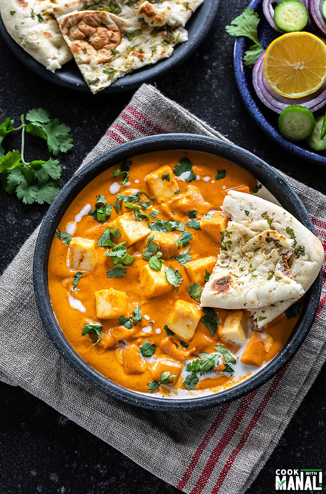

Panner Butter Masala

Description
paneer butter masala is rich and creamy made of butter, paneer,
onions, tomatoes, cashew and spice powders, and herbs. adding a fresh
and generous amount of butter to the gravy gives a good taste.
Ingredients
- Paneer
- Cashews
- Onions
- Tomatoes
- Chilli and garam masala
Steps
- Roast the onions and tomatoes in oil until fried
- Add garam and chilli masalas to taste
- Toss in a few cashews and roast everything again together
- Finally blend into a fine paste, followed by adding paneer and water